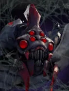
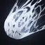

Silken Bola
Passive Ability
The Broodmother will often entangle the nearest target, making it unable to move and causing attacks to miss. The target will suffer additional magical damage when attacked. If the target dies, a small spider will hatch.
| ★ | ★★ | ★★★ | |
|---|---|---|---|
| Duration | 6 | ||
| Magical Damage | 50 | 75 | 100 |
| Extra Magical Damage | 10 | 20 | 30 |
| Miss Chance % | 40 | 60 | 80 |
| Cooldown (s) | 5 | 4 | 3 |
She continues to raise her young, amidst the field of combat. The brood quickly learns how to support their mother.
Stats
| ★ | ★★ | ★★★ | |
|---|---|---|---|
| Health | 950 | 1900 | 3800 |
| Mana | 0 | 0 | 0 |
| Armor | 10 | 10 | 10 |
| Magic resistance | 20% | 20% | 20% |
| Attack damage | 80–110 | 160–220 | 320–440 |
| Attack interval (s) | 1.1 | 1.1 | 1.1 |
| Attack range | 205 | 205 | 205 |
| Move speed | 500 | 500 | 500 |
 Aqir · Infection
Aqir · Infection
- (2) All non-Aqir allies are Infected. When an Infected piece dies while another Infected copy of the same piece (any star) is still on your board, a random Aqir hatches from the body. Its level matches the strongest surviving copy.
- (4) Your Aqir pieces are Infected too. When an Aqir dies while another copy of it is on your board (Infected or not), it hatches a random Aqir one level higher than the strongest surviving copy.
 Hunter · Aimed Shot
Hunter · Aimed Shot
Hunters always attack the enemy with the lowest current health within attack range. Wizards and other low-priority units are picked last.
- (3) Hunters' attacks have a 50% chance to be a precise shot: it can't miss and gives -5 armor for 5s.
- (6) Hunters get a separate 80% chance for a precise shot: it can't miss and gives -8 armor for 8s. This stacks with the (3) debuff.
- (9) Precise shots also knock the target back 1 grid and trigger an extra attack (at most once every 0.5s).